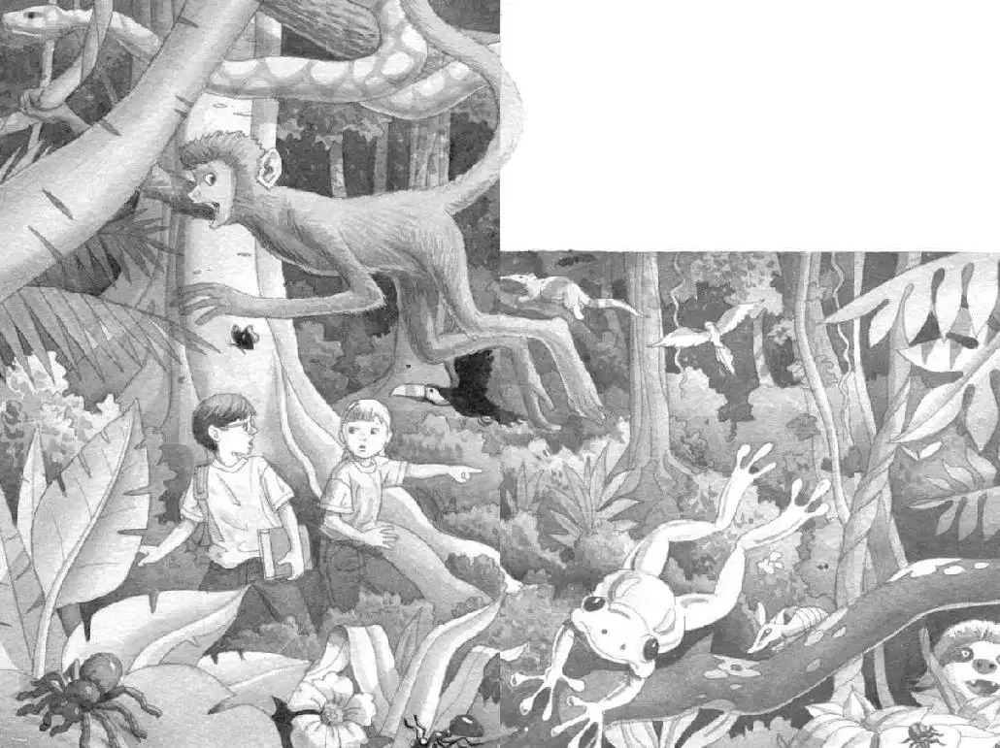

Jack didn’t move. He kept staring down at the forest floor.
“What’s wrong?” Annie called from above.
Jack didn’t answer.
“You don’t see any giant spiders, do you?” Annie said.
“Well…no.” Jack took a deep breath.
We have to keep going, he thought. We have to find the special thing for Morgan.
“No spiders. Nothing scary,” Jack called. And he started down the ladder again.
Jack and Annie climbed down through the understory. Finally they stepped onto the forest floor.
Only a few rays of light slanted through the gloom.
The trees were very, very tall and very wide. Vines and moss were hanging everywhere. The ground was covered with dead leaves.
“Before we do anything, I’d better check the book,” said Jack.
He pulled out the rain forest book. He found a picture of the dark world under the treetops.
He read:
In the rain forest, many living creatures blend in with their surroundings. This is called camouflage.
“Oh, man,” said Jack. He closed the book and looked around. “There’re tons of creatures down here. We just can’t see them.”
“Really?” whispered Annie.
She and Jack peered around at the quiet forest. Jack felt unseen eyes watching them.
“Let’s hurry and find the special thing,” whispered Annie.
“How will we know when we find it?” Jack said.
“I think we’ll just know,” said Annie. She headed off through the gloom.
Jack followed. They crept between the huge trees and past hanging vines.
Annie stopped. “Wait—what’s that?”
“What’s what?”
“Listen—that weird sound.”
Jack listened. He heard a crackling sound. It sounded like a person walking over leaves.
Jack looked around. He didn’t see anyone.
But the sound got louder.
Was it an animal? A giant bug? One that had never been named?
Just then the silent forest came alive.
Birds took off into the air. Frogs hopped over the leaves. Lizards ran up the tree trunks.
The weird noise grew louder and louder.
“Maybe the book explains it,” said Jack. He opened the book. He found a picture of different animals running together. He read:
When animals hear a crackling sound, they flee in panic. The sound means that 30 million flesh-eating army ants are marching through the dead leaves.
“It’s army ants!” cried Jack. “Millions of them!”
“Where?” cried Annie.
Jack and Annie looked around wildly.
“There!” Annie pointed.

Army ants—millions and millions of them—were marching over the leaves!
“Run to the tree house!” cried Annie.
“Where is it?” said Jack, whirling around. All the trees looked the same. Where was the rope ladder?
“Just run!” cried Annie.
Jack and Annie took off.
They ran over the dead leaves.
They ran between wide tree trunks.
They ran past the hanging vines and mosses.
They climbed over thick roots.
Jack saw a clearing ahead. It was filled with sunlight.
“That way!” he cried.
Jack and Annie hurried toward the light. They pushed their way through the bushes.
They burst onto the bank of a river.
They stared at the slow-moving brown water.
“Do you think the ants will come this way?” Annie said, panting.
“I don’t know,” said Jack. “But if we wade a few feet into the river, we’re safe. The ants won’t go into the water. Come on.”
“Look!” said Annie.
She pointed to a big log rocking at the edge of the river. The inside of the log was dug out.
“It looks like a canoe,” said Jack. He listened to the crackling sound in the distance. “Let’s get in it. Quick!”
Jack shoved the book into his backpack. Then he and Annie carefully climbed into the dug-out log.
Annie leaned out of it. She pushed away from the bank with her hands.
“Wait!” said Jack. “We don’t have paddles!”
“Oops,” said Annie.
The canoe started moving slowly down the muddy river.